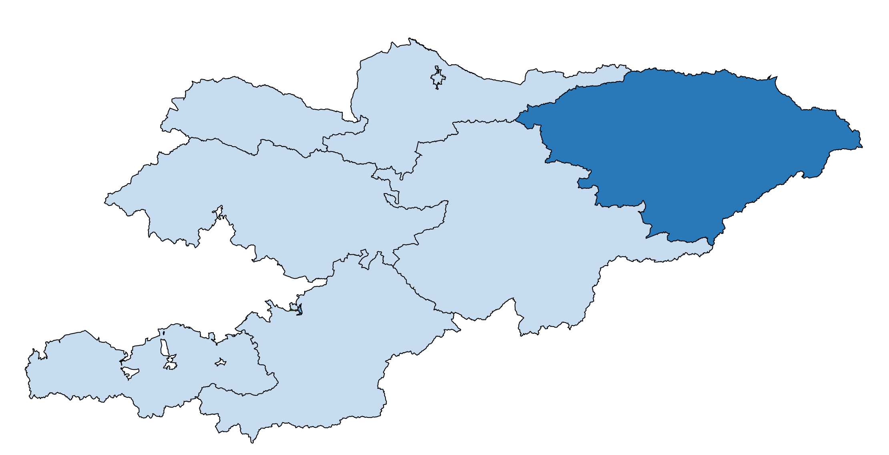

В состав Иссык-Кульской области входят 5 районов, 3 города (2 города областного значения – Каракол, Балыкчы и один город районного значения – Чолпон-Ата), 2 поселка городского типа и 61 айылный аймак. 
Тюпский район – с. Тюп (центр района)
Ак-Суйский район – с. Теплоключенка (центр района)
Тонский район – с. Боконбаево (центр района)
Джети-Огузский район – с. Кызыл-Суу (центр района)
Иссык-Кульский район – г.Чолпон-Ата (центр района)
г.Каракол
г.Балыкчы